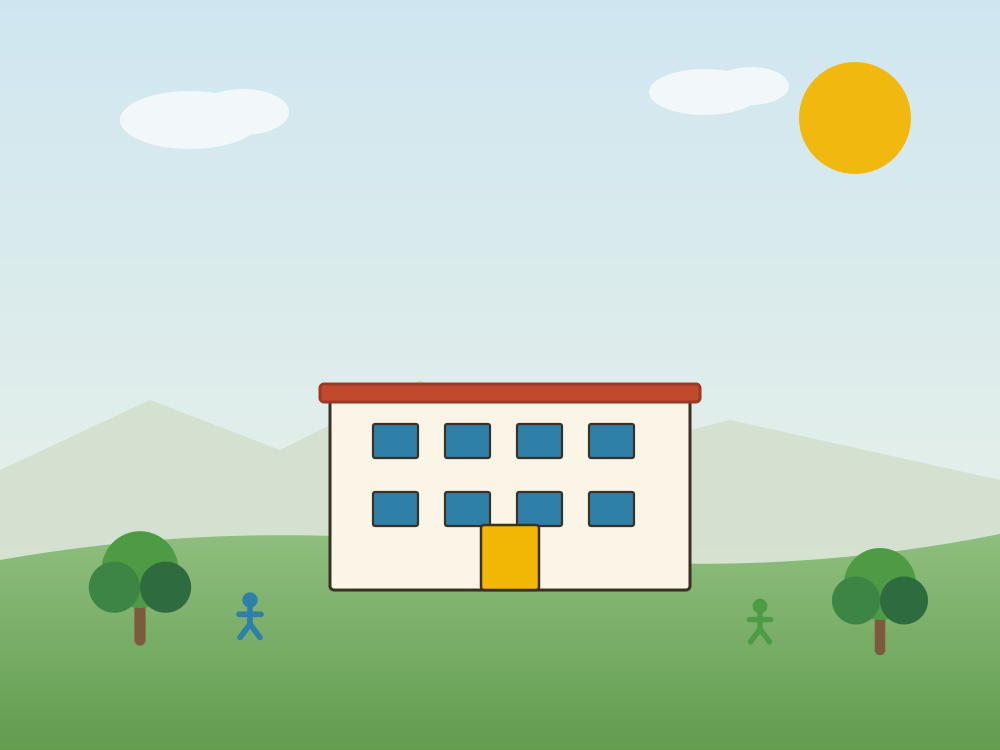
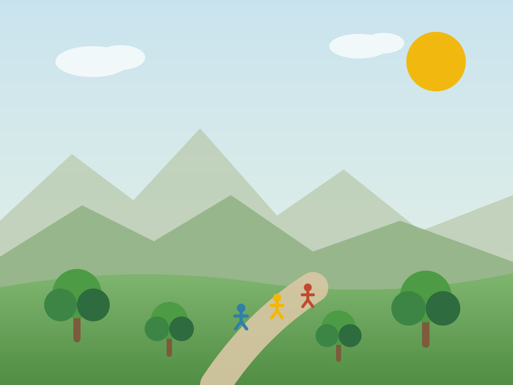
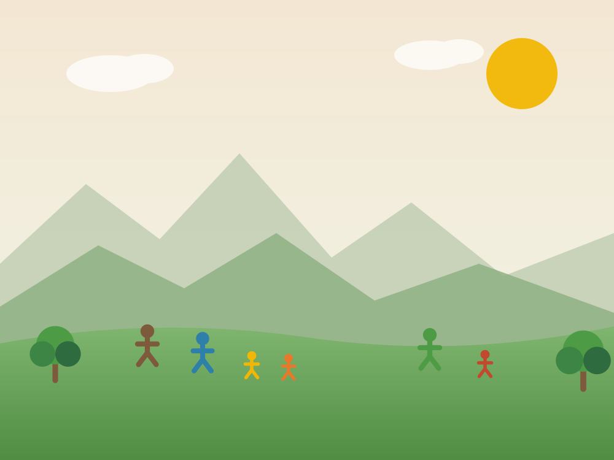
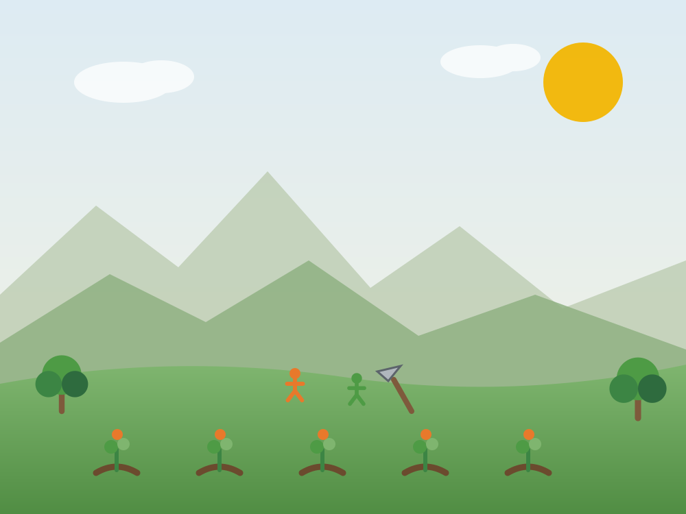
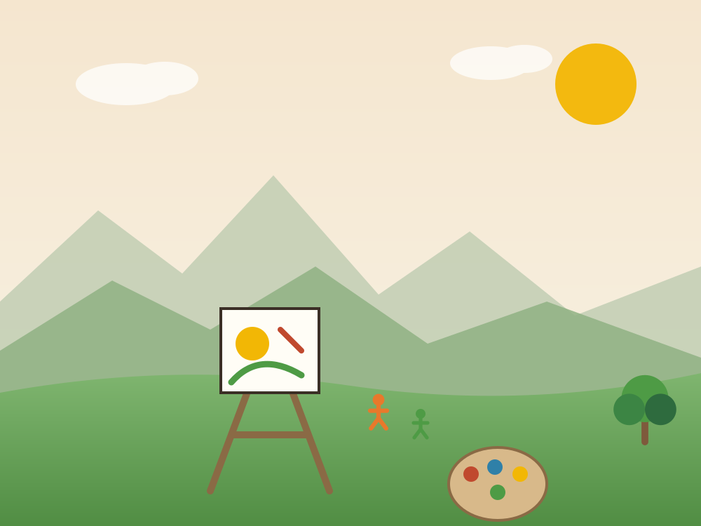
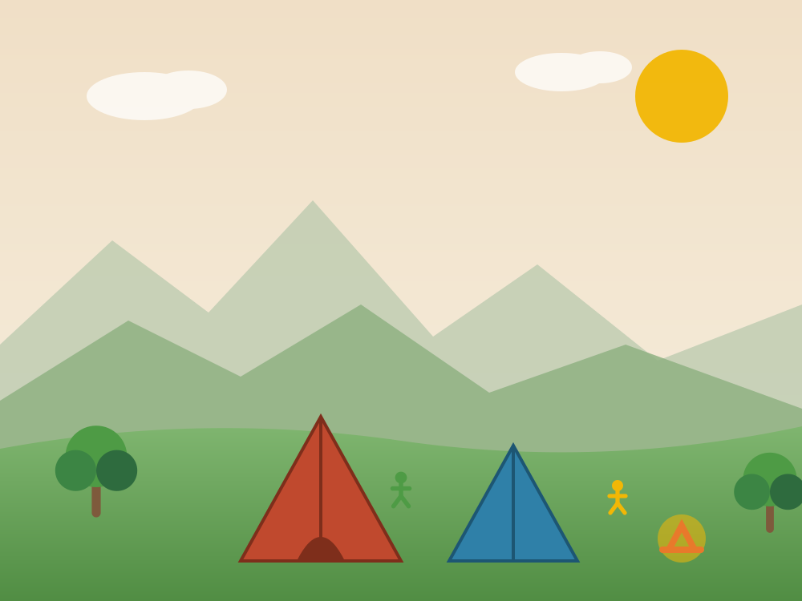

Campamento de bachillerato 2026: tres días de territorio
Estudiantes de 6º a 11º recorrieron los caminos reales de la provincia guanentina en la salida pedagógica más esperada del año.
Leer25 años Educando en Barichara desde el año 2000
Somos un colegio campestre de pedagogía viva en Barichara, Santander. Acompañamos a más de 170 niñas, niños y jóvenes desde preescolar hasta grado 11º, con la reserva natural como aula y la comunidad como maestra.

25
años de trayectoria
170+
estudiantes acompañados
14
grados, de pre-jardín a 11º
18
estudiantes por grupo (máximo)
Nuestra diferencia
No preparamos para la escuela: acompañamos la vida. Cuatro convicciones sostienen todo lo que hacemos cada día en la reserva.
El aprendizaje parte del interés real de cada estudiante. Se acompaña, no se impone: preguntas propias, proyectos con sentido y respeto por los ritmos de cada edad.
Cuatro hectáreas de reserva, huerta, bosque seco y quebrada. La ciencia se toca, la matemática se mide en la huerta y la escritura nace de lo vivido.
Máximo 18 estudiantes por grupo. Cada maestro conoce a cada niña y a cada niño por su nombre, su historia y su manera particular de aprender.
Barichara, su piedra, sus oficios y su gente entran al colegio. Formamos personas capaces de cuidar el lugar que habitan y de proyectarse al mundo.

Proyecto educativo
Nuestro proyecto educativo institucional articula el currículo oficial colombiano con una práctica de educación viva y activa. Los contenidos existen —y se cumplen—, pero llegan a través de la experiencia: el proyecto, la pregunta, la salida de campo, el taller.
El resultado son estudiantes que sostienen la curiosidad, que saben trabajar con otros y que llegan a la educación media con criterio propio.
Niveles educativos
Cuatro etapas, una misma manera de acompañar. Calendario A, jornada completa y tránsito natural entre niveles dentro de la misma comunidad.

3 a 5 añosPre-jardín, jardín I y jardín II. El juego libre, el movimiento y el vínculo seguro son la base de todo lo que viene después.
Conocer
6 a 10 añosGrados 1º a 5º. Lectura, escritura y pensamiento matemático con proyectos que salen del aula hacia la huerta y el territorio.
Conocer
11 a 14 añosGrados 6º a 9º. Profundización disciplinar, laboratorio, arte y los primeros proyectos de investigación propios.
Conocer
15 a 17 añosGrados 10º y 11º. Preparación Saber 11, proyecto de grado, servicio social y orientación vocacional acompañada.
ConocerEl campus
Estamos en la vía Barichara – San Gil, kilómetro 4, en la vereda El Llano. El campus está rodeado de bosque seco tropical: el mismo paisaje que estudiamos en clase de ciencias es el que se ve por la ventana.
Aulas abiertas, huerta productiva, zona de talleres, biblioteca, cancha y senderos. Cada espacio está pensado para que el cuerpo también aprenda.
Resultados
En las Pruebas Saber 11 de 2025 nuestros estudiantes obtuvieron promedios por encima del promedio municipal y departamental en las cinco áreas evaluadas.
66
Inglés
65
Lectura crítica
64
Matemáticas
60
Ciencias y Sociales
Promedios sobre 100 puntos. Fuente: resultados Saber 11 · 2025. La matrícula pasó de 72 estudiantes en 2015 a más de 170 en la actualidad.
La comunidad
Llegamos buscando un colegio y encontramos una comunidad. Mi hija entró tímida a jardín y hoy explica a los visitantes cómo funciona el compostaje de la huerta.
Lo que más valoro es que no perdieron la curiosidad. En bachillerato siguen preguntando, proponiendo proyectos y discutiendo con argumentos.
Salí preparada para la universidad, pero sobre todo salí sabiendo trabajar en equipo y sostener una idea propia. Eso no se enseña con guías.
Noticias
Circulares, agenda y las historias de cada semana.
Estudiantes de 6º a 11º recorrieron los caminos reales de la provincia guanentina en la salida pedagógica más esperada del año.
LeerTeatro, artes plásticas y música creados por los estudiantes durante el semestre, presentados ante toda la comunidad.
LeerEl proyecto agroecológico de primaria cerró su primer ciclo completo de siembra, cosecha y transformación de alimentos.
LeerAgenda una visita, recorre el campus con tu familia y conversa con nuestro equipo. Los cupos por grupo son limitados: máximo 18 estudiantes.